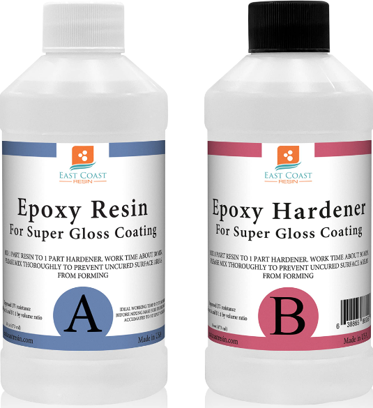
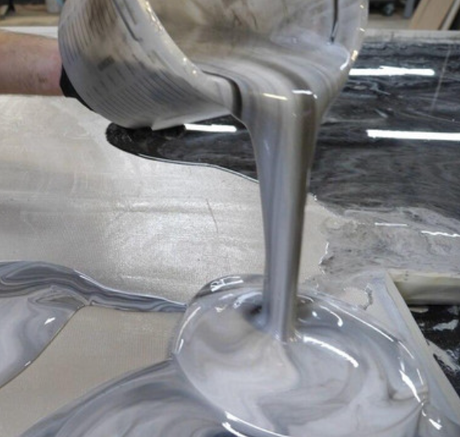
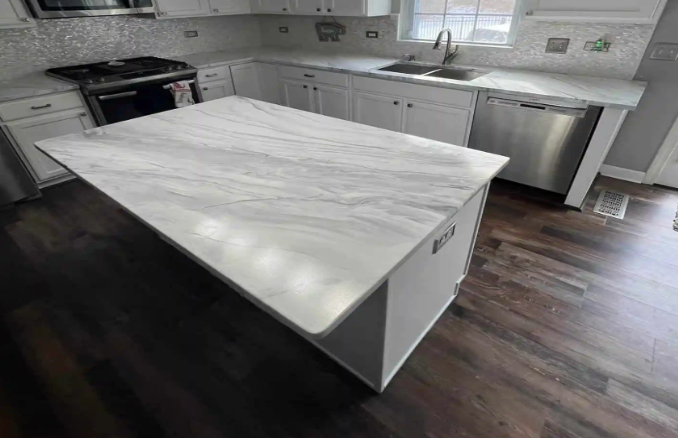
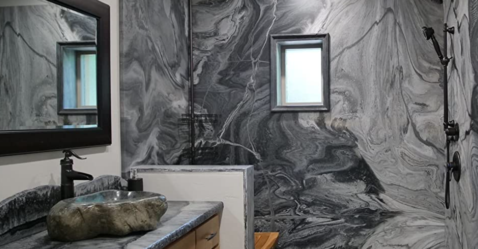
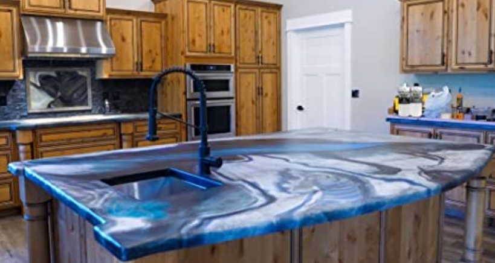

Bienvenidos a resin layers, una pequeña empresa imaginaria que he inventado para poder tener una web donde presentar mis pequeños proyectos de carpintería y artesanía con resina, donde explico un poco también como funciona su manipulación, acabado y algún que otro proyecto ajeno a mí, para que podamos ver como son algunos resultados a nivel avanzado.
La resina epoxy, es un producto relativamente facil de manipular que se emplea cada vez más en proyectos de carpintería de diseño. Se trata de un producto que se obtiene al mezclar dos componentes, para después catalizar en una reacción exotérmica.Tras un curado de unos pocos dias, queda sólido y endurecido, con un aspecto parecido al metacrilato.
   Sus posibles aplicaciones van desde cubiertas en la superfície de los muebles, suelos, paredes y encimeras. También se puede emplear para hacer piezas concretas utilizando moldes, como ceniceros, juegos de ajedrez, platos etc.